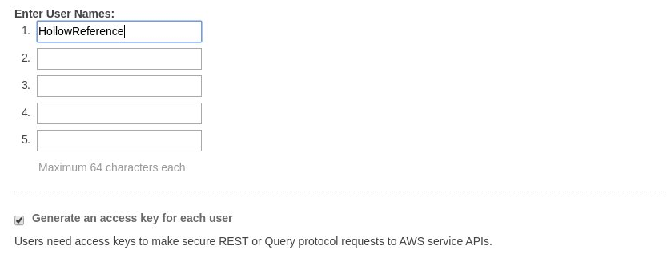
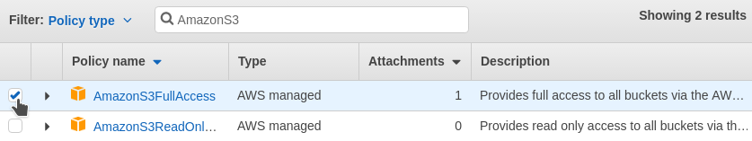
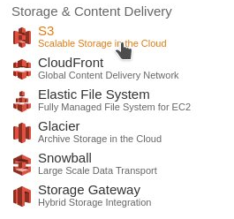
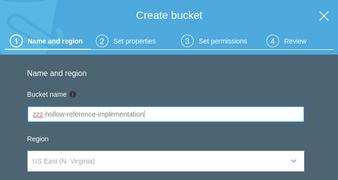
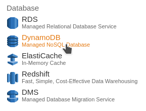

Quick Start¶
Hollow has an available reference implementation, which is designed to get you up and running with a demo in minutes. Then, we'll walk through swapping in a fully functional, production scalable, AWS-based infrastructure implementation in about an hour.
The reference implementation is a great starting point to integrate Hollow for your use case; it contains a simple mocked-up data model, which you can easily modify to suit your needs.
Learn by Doing
This Quick Start Guide is placed at the beginning of the documentation as a starting point for those who prefer to "learn by doing". If you'd prefer to gain a greater understanding of how everything fits together prior to jumping in, skip ahead to the Getting Started guide, but do come back later.
Running the Demo¶
Clone the Reference Implementation¶
Start by cloning the netflix-hollow-reference-implementation repo on GitHub:
Import into your IDE¶
Import the project into your IDE. This project ships with both a build.gradle file and a pom.xml file, so you can either use a gradle plugin or a standard maven plugin to import the dependencies.
Dependencies in Hollow
The core Hollow jar does not require or include any third party dependencies. The dependencies in the reference implementation are required for infrastructure demonstration purposes.
Start a Producer¶
The class how.hollow.producer.Producer contains a main method. Run it. This will be our data producer, and will write data to a directory publish-dir underneath the temp directory.
You should see output like this:
I AM THE PRODUCER. I WILL PUBLISH TO /tmp/publish-dir
ATTEMPTING TO RESTORE PRIOR STATE...
RESTORE NOT AVAILABLE
...
And you should have a folder /tmp/publish-dir with contents like this:
17 announced.version
370 delta-20161110185218001-20161110185228002
604 delta-20161110185228002-20161110185238003
385 reversedelta-20161110185228002-20161110185218001
551 reversedelta-20161110185238003-20161110185228002
597567 snapshot-20161110185218001
597688 snapshot-20161110185228002
597813 snapshot-20161110185238003
Start a Consumer¶
The class how.hollow.consumer.Consumer also contains a main method. Run it. This will be our data consumer, and will read data from the directory publish-dir underneath the temp directory.
You should see output like this:
I AM THE CONSUMER. I WILL READ FROM /tmp/publish-dir
SNAPSHOT COMPLETED IN 45ms
TYPES: [Actor, Movie, SetOfActor, String]
DELTA COMPLETED IN 20ms
TYPES: [Movie, SetOfActor, String]
SNAPSHOT COMPLETED IN 1ms
TYPES: [Actor, Movie]
DELTA COMPLETED IN 12ms
TYPES: [Actor, Movie, SetOfActor, String]
DELTA COMPLETED IN 0ms
TYPES: [Movie]
Inspecting the Data¶
That's it! You now have a producer, which is reading data from a data source and publishing Hollow data to /tmp/publish-dir, and a consumer which is reading that data and keeping its internal state up to date. Let's take a look at what the data actually looks like, and how it's changing over time. The consumer started a history server, so open up a browser and visit http://localhost:7777.
Fake Data
In this demo case, there is no data source. Instead, the producer is manufacturing some randomized fake data on the first cycle, and making some minor random modifications to that data for each cycle. Inspect the package how.hollow.producer.datamodel to see the mock data model and how it is randomized.
Plugging in Infrastructure¶
The demo we have so far is fully functional, but writing to and reading from a local disk directory is probably not realistic for a production implementation. In the following few sections, we'll actually set up a simple AWS-based infrastructure which could easily scale to any production deployment.
Using AWS
This demonstration uses AWS because it is accessible to anyone, easy to set up, and extremely reliable. In order to proceed, you'll need an AWS account, which is free to sign up for -- you only pay for the services you use.
Even if you're not able to use the prescribed AWS-based infrastructure, running through the following steps will be useful to gain an understanding of how to swap in different infrastructure implementations for use with Hollow.
Create a User¶
Once you've logged into your AWS account, select Identity & Access Management from the AWS console:
Select Users, then Add User. Enter a name in box (e.g. HollowReference).

Select the checkbox Programmatic access. Click Next:Permissions in the bottom right corner of the screen.
On the next page, Click Attach existing policies directly.

We'll need S3 and DynamoDB access for this user. For now, let's give this user full access to S3. Select the checkbox next to the policy named AmazonS3FullAccess:

Using the same interface, after the S3 policy checkbox is selected, on the same page search for and select the AmazonDynamoDBFullAccess policy.
Click Next: Review. You should see the following:

Click Create User. Here you'll see an Access Key ID and a Secret Access Key. Copy both of these strings and set them off to the side, we'll need them soon.
Create an S3 Bucket¶
Back on the AWS console landing page, select S3:

Click Create Bucket, then create a bucket. Select a unique name for your bucket. Your bucket can be in any region, here we're using the US Standard region:

Click Next.
Leave the defaults on the next couple of screens for now. Click Next twice more, then Create Bucket.
Plug the Producer into S3¶
Now that we've set up our user and our S3 bucket, we can plug the producer into S3. Open up the Producer class in the Hollow reference implementation project. Modify the main method: swap the Publisher and Announcer implementations as follows, replacing zzz-hollow-reference-implementation with the bucket name you chose in the prior step:
AWSCredentials credentials =
new BasicAWSCredentials("<Access Key ID>", "<Secret Access Key>");
Publisher publisher =
new S3Publisher(credentials, "zzz-hollow-reference-implementation", "demo");
Announcer announcer =
new S3Announcer(credentials, "zzz-hollow-reference-implementation", "demo");
HollowProducer producer = HollowProducer.withPublisher(publisher)
.withAnnouncer(announcer)
.build();
Start the producer. After a few cycles, inspect the demo folder in your S3 bucket to see what the producer is writing.
Watch your AWS Usage
The AWS meter is running. Leaving this version of the producer running overnight could run up an AWS bill. Shut the demo down once you're done!
Clean Up After Yourself
If you do ultimately choose to use S3 as your blob storage infrastructure, be aware that this implementation does not automatically clean up data for you, which can result in increasing AWS bills. You should have a cleanup strategy, which can be as simple as adding a Lifecycle Rule to your bucket which will, for example, delete old data after 30 days.
Plug the Consumer into S3¶
Now that our producer is writing data into S3, we need our consumers to read that data. Open up the Consumer class in the Hollow reference implementation project. Modify the main method: swap the BlobRetriever and AnnouncementWatcher implementations as follows, replacing zzz-hollow-reference-implementation with the bucket name you chose in the prior step:
AWSCredentials credentials =
new BasicAWSCredentials("<Access Key ID>", "<Secret Access Key>");
BlobRetriever blobRetriever =
new S3BlobRetriever(credentials, "zzz-hollow-reference-implementation", "demo");
AnnouncementWatcher announcementWatcher =
new S3AnnouncementWatcher(credentials, "zzz-hollow-reference-implementation", "demo");
Consumer consumer = HollowConsumer.withBlobRetriever(blobRetriever)
.withAnnouncementWatcher(announcementWatcher)
...
.build();
Start the consumer. You'll see the same output from the demo step, except now the Hollow input data is coming from S3.
At this point, we have a fully distributed infrastructure. You can start the producer on one machine, and start a consumer on many other machines, anywhere in the world. Each of the consumers will update in lock-step each time the producer publishes changes.
Address already in use Exception
Note that the Consumer attempts to start a history server on port 7777. Because of this, only one Consumer can be running on a single machine at one time. If you get a java.net.BindException, shut down the other Consumer and try again.
Publishing Closer to the Consumer
Our implementation currently publishes to a single S3 bucket. This is OK, but S3 buckets reside in specific AWS regions, and it is often beneficial to publish data closer to your consumers. For example, if you have some consumers in the AWS region US Standard, and some in the region Sydney, then it makes sense to simultaneously publish to one bucket in each region, and have consumers read from the bucket closest to them.
A Better Announcement Infrastructure¶
Our distributed infrastructure thus far leverages S3 for both a blob store mechanism, and an announcement mechanism. Although S3 is perfectly suitable for blob storage, it's less well suited for announcement. Instead, we can leverage DynamoDB for the announcement infrastructure, and achieve both improved scalability and better economics.
First, we need to create a DynamoDB table. Back on the AWS console landing page, select DynamoDB:

Select Create table and enter a Table name (e.g. HollowAnnouncement) and use namespace as the Partition key:

Select Create.
Plug the Producer into DynamoDB¶
Now that we've set up our DynamoDB table, let's swap it into our producer as our announcement mechanism. Go back to the Producer class and modify the main method, swapping the Announcer implementation as follows:
Start the producer. After at least one cycle, you'll be able to scan the table and see a record indicating the currently announced version for our demo namespace:

Plug the Consumer into DynamoDB¶
Now that our producer is announcing to DynamoDB, of course our consumer needs to look there for update directions. Go back to the Consumer class and modify the main method, swapping the AnnouncementWatcher implementation as follows:
AnnouncementWatcher announcementWatcher =
new DynamoDBAnnouncementWatcher(credentials, "HollowAnnouncement", "demo");
Run the consumer. You'll see the same output from prior steps, except now the Hollow input data is coming from S3, and the state version announcement is read from DynamoDB.
Pinning The State
The provided DynamoDBAnnouncementWatcher can be pinned. If the announcement item in DynamoDB contains a field pin_version, then the consumer will go to the version indicated in that field, instead of the version the producer announces. See Pinning Consumers for more details about pinning data.
Plug In Your Data Model¶
Congratulations! You now have a living, breathing, fully production scalable implementation of Hollow in your hands. All that's left to do is substitute your data model for the example provided. The data model can be defined, as in this example, with a set of POJO classes. Take this starting point and make it your own -- remove the classes underneath how.hollow.producer.datamodel and replace them with your data model.
Modeling Data with POJOs
The HollowObjectMapper section of this document provides details about how to convert your POJO data model into Hollow.
Continue on to the Getting Started guide to learn more about how the fundamental pieces of Hollow fit together, how to create a consumer API custom-tailored to your data model, and how to index your data for easy, efficient retrieval by consumers.